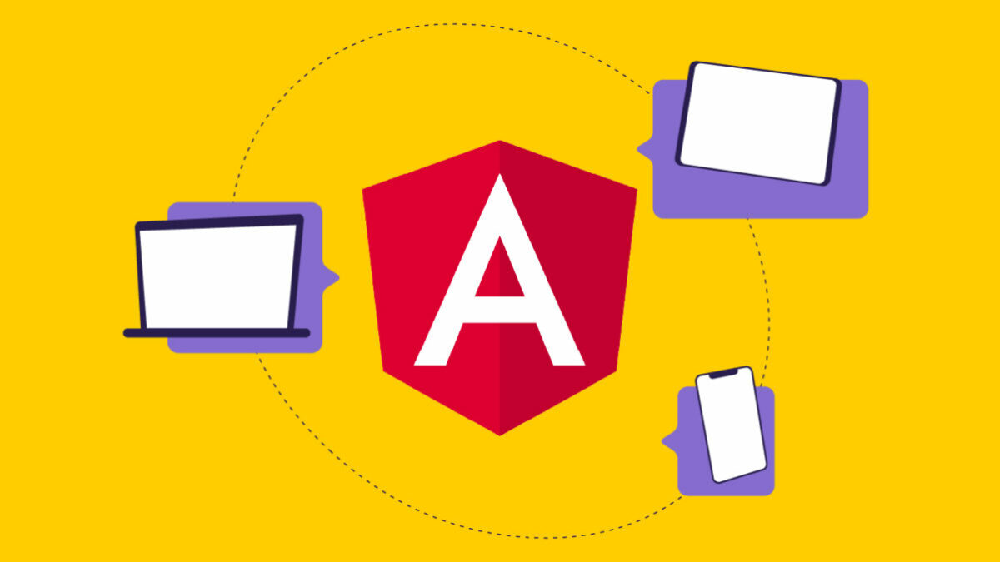

¿Qué es Angular?
NextJs Angular es un Framework de JavaScript de código abierto escrito en TypeScript. Su objetivo principal es desarrollar aplicaciones de una sola página. Google se encarga del mantenimiento y constantes actualizaciones de mejoras para este framework.

¿Por qué se necesita un Framework? En concreto, en el desarrollo de software, un framework es una estructura de soporte conceptual y tecnológica definida, generalmente, con artefactos o módulos de software específicos, que pueden servir como base para la organización y desarrollo de software. Es decir, un framework es una especie de plantilla, esquema o estructura conceptual basada en tecnología que permite trabajar de una forma mucho más sencilla. De esta forma, se evitan posibles errores de programación. Por tanto, un marco es un conjunto de herramientas y módulos que se pueden reutilizar para diferentes proyectos. Facilitando en varios aspectos el desarrollo, mejorando el tiempo, esfuerzo, organización.
Características de Angular
TypeScript define un conjunto de tipos de JavaScript, lo que ayuda a los usuarios a escribir código JavaScript que es más fácil de entender. Todo el código TypeScript se compila con JavaScript y se puede ejecutar sin problemas en cualquier plataforma. TypeScript no es obligatorio para desarrollar una aplicación Angular. Sin embargo, es muy recomendable ya que ofrece una mejor estructura sintáctica, al tiempo que hace que la base de código sea más fácil de entender y mantener.
Data Binding (Enlace de datos) El enlace de datos (data binding) es un proceso que permite a los usuarios manipular elementos de la página web a través de un navegador web. Emplea HTML dinámico y no requiere secuencias de comandos ni programación complejas. El enlace de datos se utiliza en páginas web que incluyen componentes interactivos, como calculadoras, tutoriales, foros y juegos. También permite una mejor visualización incremental de una página web cuando las páginas contienen una gran cantidad de datos.
Testing (Pruebas) Angular usa el Framework de prueba Jasmine. Jasmine proporciona múltiples funcionalidades para escribir diferentes tipos de casos de prueba. Karma es el ejecutor de tareas para las pruebas que usa un archivo de configuración para configurar la puesta en marcha, los reportes y el framework de prueba.
Curso para aprender Angular